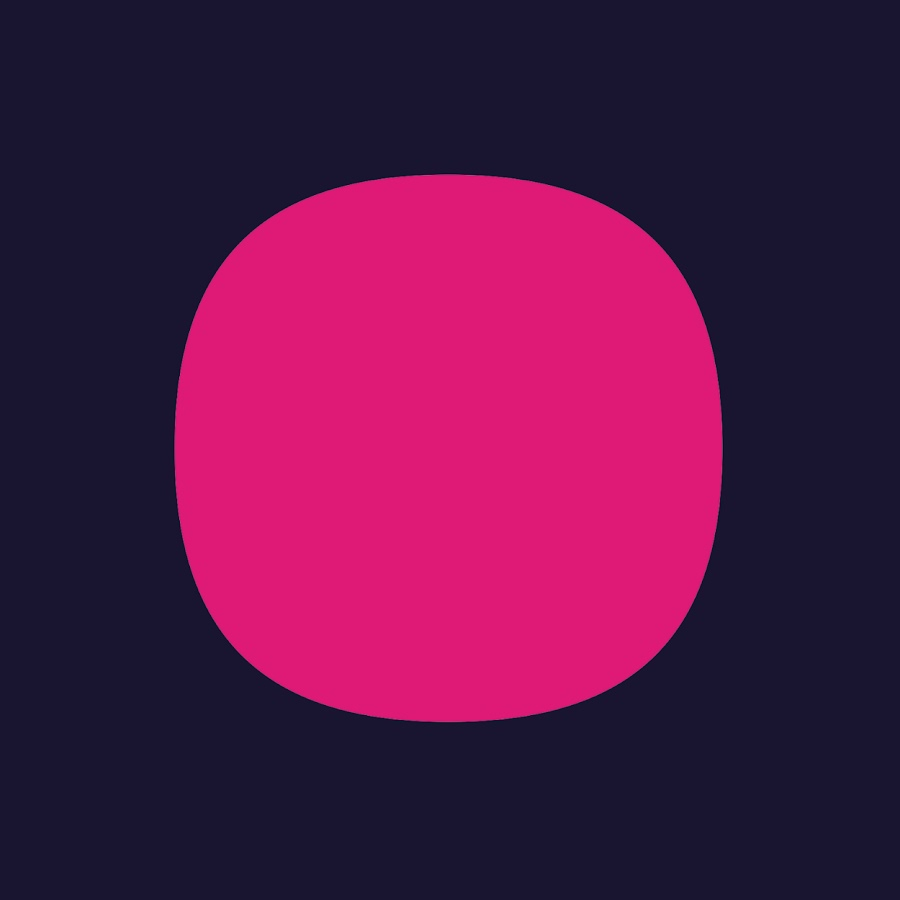

Experience

GWI
(2020 - Present)
Engineering Manager
(2024 - Present)
- Leading a team of senior backend, frontend, ML, and AI engineers to enhance GWI's platform
- Developing Spark, a new product for automating market research insights
- Building GWI's entire AI infrastructure
Senior Software Engineer
(Apr 2022 - Apr 2024 · 2 yrs 1 mo)
- Built and integrated LLMs, vector databases, and related AI tools into GWI's platform
- Developed shared libraries and tooling for the entire engineering department, including:
- Go OpenTelemetry Wrapper for distributed tracing (Grafana Tempo)
- Prometheus Integration library for consistent metrics collection
Software Engineer
(Mar 2020 - Apr 2022 · 2 yrs 2 mos)
- Designed and maintained microservices and micro-frontends in Go, Python, Postgres, gRPC, Docker, Kubernetes, Terraform, and GCP
- Implemented React and TypeScript solutions on the frontend
Microsoft (Subcontractor via Omniworks)
(2019 - 2020)
- Contributed as a Full-Stack Engineer in a seven-member scrum team building an e-banking application
- Backend: .NET, C#.
- Frontend: Angular 7, TypeScript, RxJS, SCSS, Angular Material.
Software Engineer / Freelancer
(2017 - 2019)
-
Driving License Platform
- Xamarin.Android & Xamarin.iOS apps for students to practice driving theory.
- Angular 4 web client for driving schools to track progress.
- Backend: C# (ASP.NET Web API), hosted on Microsoft Azure.
-
Cloud Inventory Management & Analysis
- Built for a small publishing house.
- Technologies: C#, ASP.NET Web API, SQL Server, Angular 4, TypeScript, Microsoft Azure.
-
Android Educational Application
- Interactive barcode scanner for additional media content in books.
- Driving exam test simulators.
- Technologies: Java 8, Gradle, Android SDK.
Cycom Business Solutions LTD
(Jan 2015 – Oct 2015 · 10 mos)
- Specialized in .NET ecosystem
- Responsible for platform testing, daily progress reports, and involved in project management
ReportBrain Limited
(Jul 2014 – Sep 2014 · 3 mos)
- Worked with JavaScript and AngularJS.
- Gained my first experiences in agile delivery and collaboration.